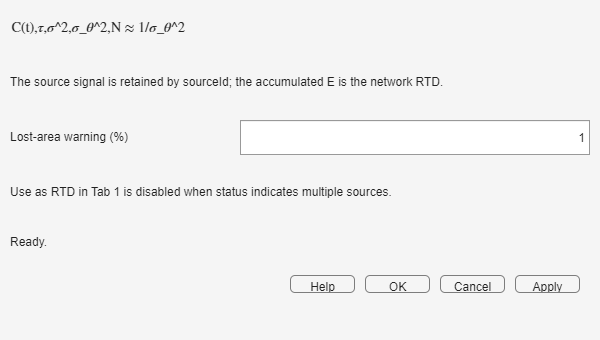

The monitor compares C(t) with the retained source signal, marks the mean time, reports moments, and can send the accumulated network RTD to Tab 1.
Place the monitor at the point whose response you want to study. Ensure the run reaches a final time that includes the visible tail; otherwise area and moments describe only the captured interval.

| Result | How to use it |
|---|---|
| Area | Measures tracer recovery over the captured time window. A deficit can indicate truncation; compare it with the lost-area warning. |
| τ | Locates the mean arrival time. For a vessel or complete path, compare it with the nominal V/Q. |
| σ2 | Measures absolute temporal spreading around τ; larger values mean a broader response. |
| σθ2 | Normalizes variance by τ2, allowing networks with different time scales to be compared. |
| N ≈ 1/σθ2 | Gives an equivalent tanks-in-series interpretation when that comparison is meaningful. |
The dashed vertical line marks τ. The source overlay shows the delay and spreading caused by the upstream network. If one very narrow peak hides the rest of the curve, use Clip peak for display; clipping changes the view, not the calculated moments.
The stream carries an accumulated E(t) built directly from the upstream vessel RTDs and flow-weighted parallel paths. Therefore Use as RTD in Tab 1 is exact for that modeled network even when Cin(t) is a step, ramp, broad pulse, or experimental signal: it does not estimate E(t) by deconvolving the displayed concentration.
With multiple independent sources, no single source-to-monitor distribution exists. The transfer action is disabled and the explanation identifies the multiple-source condition.
| Symptom | What to do |
|---|---|
| Area is below the expected recovery | Read the lost-area message and increase tfinal if the tail was cut. |
| Moments are dominated by one spike | Refine Δt; use display clipping only to inspect the remaining curve. |
| Use as RTD is disabled | Check for multiple sources or incomplete upstream data. |
| τ differs from V/Q | Check units, truncation, parallel flow weights, and whether V/Q represents the same monitored network. |